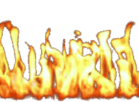
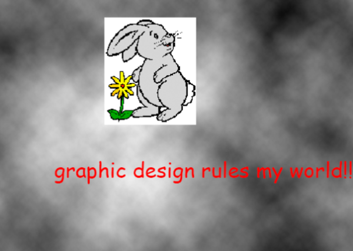

Jemo's personal snippet archive

Custom homepage
Forked homepage to use with Brave, featuring Firewatch wallpaper and a clock.
Open custom homepage
Cookie Sower
A plugin for CookieClicker, requires TamperMonkey/Greasemonkey to function.
Open in browser
Download
BotScape
CookieClicker clone based on RuneScape.
Open in browser
RankShortcut
Minecraft plugin for tracking played time and connecting rewards to playtime. Optional Vault integration to allow players to buy shortcuts to the next rank.
Version 1.12.2
Requires spigot
Download
RuneScape Chunk map
Runescape world map with chunk borders. Copied from the original source and had the borders offset by 0.25 tile.
Open in browser
Archived flash games
Bunch of old flash games that I've enjoyed in the past. Bit of a hassle to get them to work, but I'm sure you can figure it out.
(use this)
Garfield's Scary Scavenger Hunt
Garfield's Scary Scavenger Hunt 2
Swords & Sandals 2
Shopping Cart Hero 3
Acid Factory
Papa Louie